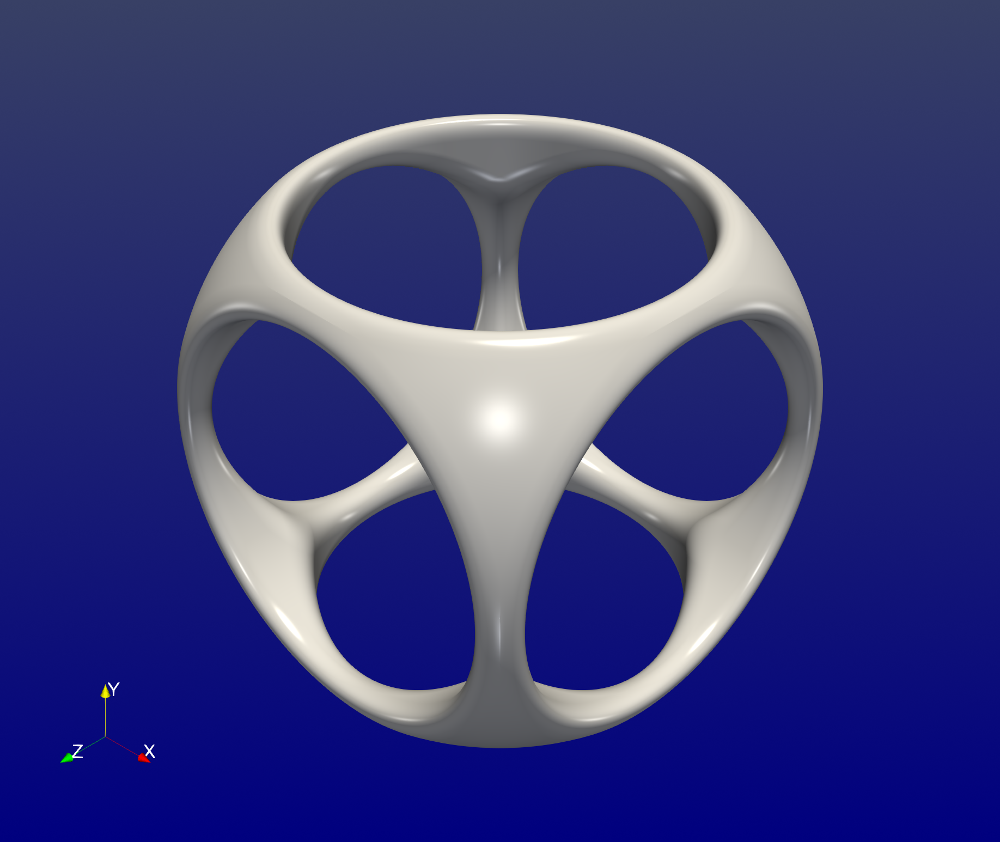
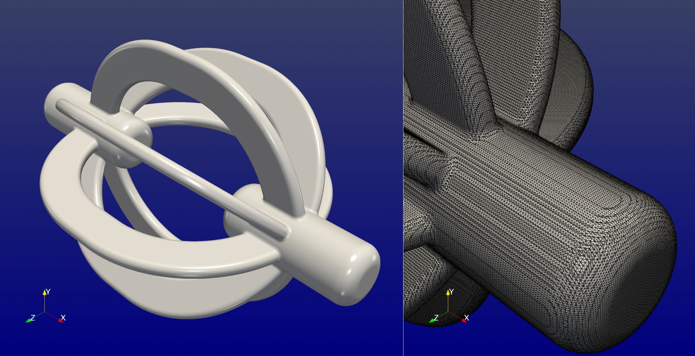
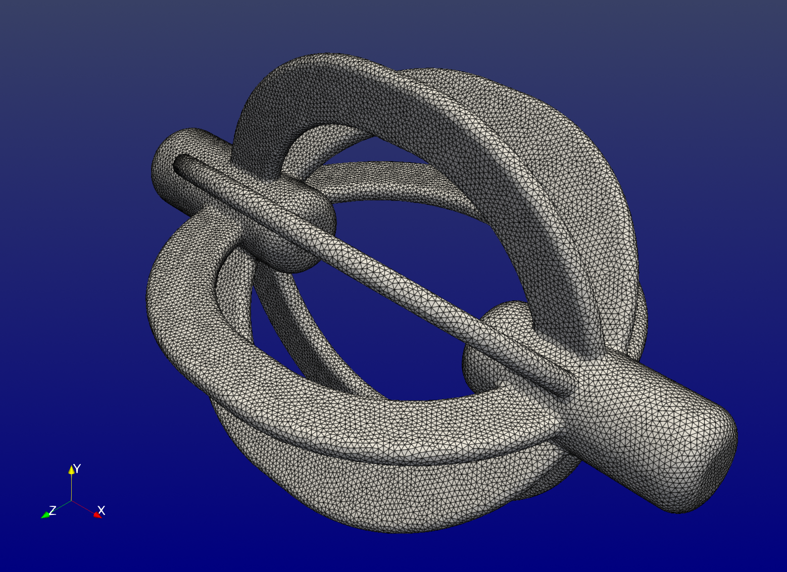
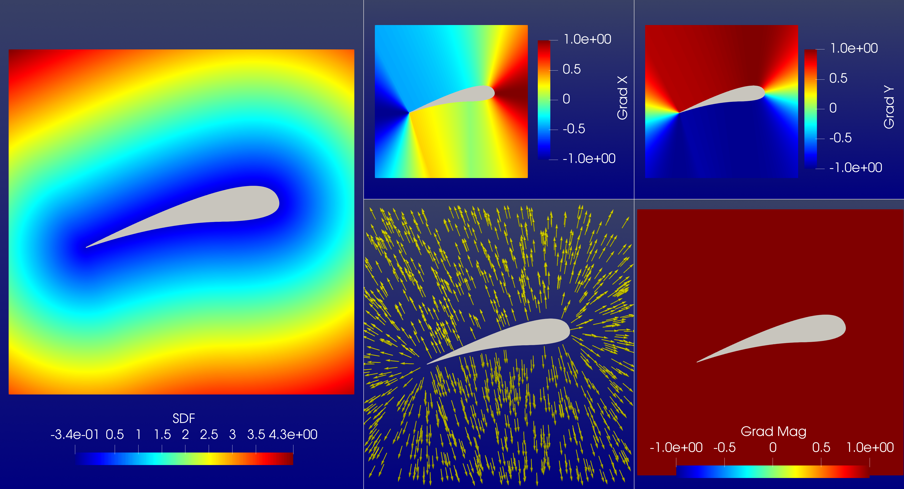
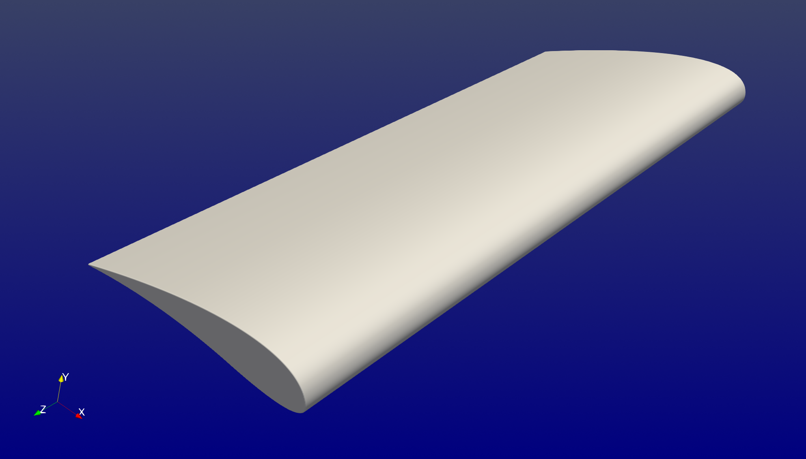

Examples
This page collects a few examples for using ImplicitGeometries.jl.
Smooth boolean operations
The following constructs the canonical geometry showcasing boolean operations on primitive geometries. Here, we will use the smooth counterparts of the standard boolean operations. The factor k controls the smoothness.
julia> using ImplicitGeometriesjulia> k = 0.1; # smoothness factorjulia> b1 = Box(; w=2.0, h=2.0, d=2.0)Box{3, Float64}julia> s1 = Sphere(; r=1.3)Sphere{3, Float64}julia> i1 = SmoothIntersection(s1, b1; k = k)SmoothIntersection{3, Float64}julia> c1 = Cylinder(; h = 2.0, r = 0.8)Cylinder{3, Float64}julia> c2 = Rotation(Cylinder(; h = 2.0, r = 0.8); ϕ = π/2, θ = 0.0, ψ = 0.0)Rotation{3, Float64}julia> c3 = Rotation(Cylinder(; h = 2.0, r = 0.8); ϕ = 0.0, θ = 0.0, ψ = π/2)Rotation{3, Float64}julia> u1 = SmoothUnion(c1, c2; k = k)SmoothUnion{3, Float64}julia> u2 = SmoothUnion(u1, c3; k = k)SmoothUnion{3, Float64}julia> s2 = SmoothSubtraction(i1, u2; k = k)SmoothSubtraction{3, Float64}julia> geometry = Scaling(s2; s=7.0)Scaling{3, Float64}
To print the construction tree, you can use
julia> using AbstractTreesjulia> print_tree(geometry; maxdepth=10)Scaling (s = 7.0) └─ SmoothSubtraction ├─ SmoothIntersection │ ├─ Sphere (r = 1.3) │ └─ Box (w = 2.0, h = 2.0, d = 2.0) └─ SmoothUnion ├─ SmoothUnion │ ├─ Cylinder (r = 0.8, h = 2.0) │ └─ Rotation (ϕ = 90.0°, θ = 0.0°, ψ = 0.0°, dx = 0.0, dy = 0.0, dz = 0.0) │ └─ Cylinder (r = 0.8, h = 2.0) └─ Rotation (ϕ = 0.0°, θ = 0.0°, ψ = 90.0°, dx = 0.0, dy = 0.0, dz = 0.0) └─ Cylinder (r = 0.8, h = 2.0)
The signed distance function can be evaluated at some position p as follows
julia> using StaticArraysjulia> p = SVector(1.0, 2.0, 3.0)3-element StaticArraysCore.SVector{3, Float64} with indices SOneTo(3): 1.0 2.0 3.0julia> geometry(p)3.3639320225002107
Visualization
ImplicitGeometries.jl only defines implicit geometries. External tools are needed for visualization.
Clip by scalar
One way to visualize the implicitly defined geometry is to sample the signed distance function on a grid of points and export it a VTK file using WriteVTK.jl.
using WriteVTK
# define sampling grid
Ix = LinRange(-7.5, 7.5, 100)
Iy = LinRange(-7.5, 7.5, 100)
Iz = LinRange(-7.5, 7.5, 100)
x = Base.Generator(p -> SVector{3}(p), Iterators.product(Ix, Iy, Iz))
# sample geometry, gradient and normals
ϕ = broadcast(geometry, x);
∇ϕ = broadcast(gradient, x);
n = broadcast(normal, x);
# export to vtk file
vtk_grid("sdf", Ix, Iy, Iz) do vtk
vtk["ϕ"] = ϕ
vtk["∇ϕ"] = ∇ϕ
vtk["n"] = n
endTo show the zero levelset one can load the VTK file in Paraview and clip the dataset by a scalar (i.e. the signed distance function at zero). The normals can be used to improve the lighting. The final result is shown below.

Marching cubes
Another way, which is arguably faster and gives better results for three-dimensional signed distance functions, is to use MarchingCubes.jl to extract the surface. The normals can be then evaluated on that extracted surface only. Finally, the dataset can be exported using WriteVTK.jl.
Consider the following geometry
julia> geometry = Ring(Rectangle(; w=1.0, h=0.05), r=0.2);julia> geometry = Revolution(geometry, o=4.0);julia> geometry = Elongation(geometry; dx=0.5);julia> rotated1 = Rotation(geometry; ϕ=π/2);julia> rotated2 = Rotation(geometry; ϕ=π/2+π/4);julia> rotated3 = Rotation(geometry; ϕ=π/2-π/4);julia> geometry = SmoothUnion(geometry, rotated1);julia> geometry = SmoothUnion(geometry, rotated2);julia> geometry = SmoothUnion(geometry, rotated3);julia> geometry = SmoothUnion(geometry, Translation(Rotation(Ring(Cylinder(; r=0.5, h=2.0); r=0.5); ψ=π/2); dx = -5.0));julia> geometry = SmoothUnion(geometry, Translation(Rotation(Ring(Cylinder(; r=0.5, h=2.0); r=0.5); ψ=π/2); dx = 5.0));julia> print_tree(geometry; maxdepth=10)SmoothUnion ├─ SmoothUnion │ ├─ SmoothUnion │ │ ├─ SmoothUnion │ │ │ ├─ SmoothUnion │ │ │ │ ├─ Elongation (dx = 0.5, dy = 0.0, dz = 0.0) │ │ │ │ │ └─ Revolution (o = 4.0) │ │ │ │ │ └─ Ring (r = 0.2) │ │ │ │ │ └─ Rectangle (w = 1.0, h = 0.05) │ │ │ │ └─ Rotation (ϕ = 90.0°, θ = 0.0°, ψ = 0.0°, dx = 0.0, dy = 0.0, dz = 0.0) │ │ │ │ └─ Elongation (dx = 0.5, dy = 0.0, dz = 0.0) │ │ │ │ └─ Revolution (o = 4.0) │ │ │ │ └─ Ring (r = 0.2) │ │ │ │ └─ Rectangle (w = 1.0, h = 0.05) │ │ │ └─ Rotation (ϕ = 135.0°, θ = 0.0°, ψ = 0.0°, dx = 0.0, dy = 0.0, dz = 0.0) │ │ │ └─ Elongation (dx = 0.5, dy = 0.0, dz = 0.0) │ │ │ └─ Revolution (o = 4.0) │ │ │ └─ Ring (r = 0.2) │ │ │ └─ Rectangle (w = 1.0, h = 0.05) │ │ └─ Rotation (ϕ = 45.0°, θ = 0.0°, ψ = 0.0°, dx = 0.0, dy = 0.0, dz = 0.0) │ │ └─ Elongation (dx = 0.5, dy = 0.0, dz = 0.0) │ │ └─ Revolution (o = 4.0) │ │ └─ Ring (r = 0.2) │ │ └─ Rectangle (w = 1.0, h = 0.05) │ └─ Translation (dx = -5.0, dy = 0.0, dz = 0.0) │ └─ Rotation (ϕ = 0.0°, θ = 0.0°, ψ = 90.0°, dx = 0.0, dy = 0.0, dz = 0.0) │ └─ Ring (r = 0.5) │ └─ Cylinder (r = 0.5, h = 2.0) └─ Translation (dx = 5.0, dy = 0.0, dz = 0.0) └─ Rotation (ϕ = 0.0°, θ = 0.0°, ψ = 90.0°, dx = 0.0, dy = 0.0, dz = 0.0) └─ Ring (r = 0.5) └─ Cylinder (r = 0.5, h = 2.0)
The extraction of the surface using marching cubes is straightforward,
using MarchingCubes, WriteVTK
# define sampling grid
Ω = ((-7.5, 7.5), (-5.0, 5.0), (-5.0, 5.0))
Ix = LinRange(Ω[1]..., 400)
Iy = LinRange(Ω[2]..., 400)
Iz = LinRange(Ω[3]..., 400)
x = Base.Generator(p -> SVector{3}(p), Iterators.product(Ix, Iy, Iz))
# sample sdf at the grid of points
ϕ = broadcast(geometry, x);
# initialize and execute marching cubes
mc = MC(ϕ, Int32, x=Ix, y=Iy, z=Iz);
march(mc)
# collect vertex points, triangualr cells, normals and export
points = reduce(hcat, mc.vertices)
cells = map(t -> MeshCell(VTKCellTypes.VTK_TRIANGLE, t), mc.triangles)
vtk_grid("mc", points, cells) do vtk
vtk["n"] = broadcast(normal, mc.vertices)
endThe result is a surface mesh shown below

A key advantage of this approach is that the resulting surface mesh can be imported into MeshLab, which allows for generating meshes suitable for analysis. This makes it possible to perform both immersed and boundary-fitted finite element computations on geometries modeled with ImplicitGeometries.jl.

Quadratic Bezier curves
Two-dimensional signed distance function can be generated from closed multisegment Bezier curves. Consider the following simple airfoil modeled by three quadratic Bezier segments
julia> airfoil = [ SVector(-1.0, 0.0), SVector( 0.91070, 0.39097), SVector( 1.0, 0.0), SVector( 1.0, 0.0), SVector( 1.06054, -0.26505), SVector( 0.4, -0.1), SVector( 0.4, -0.1), SVector(-0.20900, 0.05217), SVector(-1.0, 0.0) ];julia> geometry = QuadraticBezier(; v=airfoil)QuadraticBezier{2, Float64}julia> geometry = Ring(geometry; r=0.005)Ring{2, Float64}julia> geometry = Rotation(geometry; θ = deg2rad(15))Rotation{2, Float64}julia> print_tree(geometry)Rotation (θ = 15.0°, dx = 0.0, dy = 0.0) └─ Ring (r = 0.005) └─ QuadraticBezier (nseg = 3)
The result together with the gradient of the signed distance function and the normals is shown below.

The two-dimensional airfoil can be extruded to obtain a three-dimensional airfoil
julia> geometry = QuadraticBezier(; v=airfoil)QuadraticBezier{2, Float64}julia> geometry = Rotation(geometry; θ = deg2rad(15))Rotation{2, Float64}julia> geometry = Scaling(geometry; s=2.0)Scaling{2, Float64}julia> geometry = Extrusion(geometry; h=5.0)Extrusion{3, Float64}julia> geometry = Ring(geometry; r=0.0125)Ring{3, Float64}julia> print_tree(geometry)Ring (r = 0.0125) └─ Extrusion (h = 5.0) └─ Scaling (s = 2.0) └─ Rotation (θ = 15.0°, dx = 0.0, dy = 0.0) └─ QuadraticBezier (nseg = 3)
